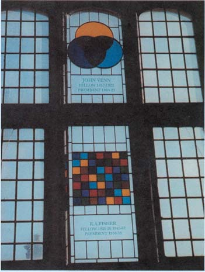

|  |
|
The photograph (left) shows the window in the Hall of Gonville and Caius College, Cambridge University, erected in Fisher's honour ca. 1990. Top left: a pane commemorating John Venn (and his Venn diagrams). Bottom left: a pane depicting Fisher's latin square experimental design. On 26 June 2020, Gonville & Caius College issued this statement "The College is now aware of the views and actions of R.A. Fisher [i.e. his support of the eugenics movement] ... The College Council was clear that it should no longer honour Fisher the man with a window, which causes such broad offence." By 29 July 2020 the Fisher window (or "roundel") had been removed (right). |
Fisher (1930): on species and parapatric speciation The RA Fisher Digital Archive Back to Portraits & quotations Back to Jim Mallet Home Page |